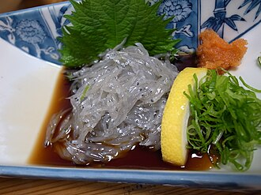

しらうおの漁獲量 都道府県ランキング
全4都道府県の順位と漁獲量
しらうおの漁獲量が全国で最も多いのは茨城県で、194 tです。全国（225 t）の86%を占めます。

| 順位 | 都道府県 | 漁獲量 | 全国に占める割合 |
|---|---|---|---|
| 1位 | 茨城県 | 194 t | 86% |
| 2位 | 秋田県 | 16 t | 7.1% |
| 3位 | 北海道 | 9 t | 4.0% |
| 4位 | 青森県 | 7 t | 3.1% |
しらうおの漁獲量の推移（令和2年〜令和6年）
全国の漁獲量は、令和2年の507 tから令和6年の225 tへ、56%減りました。1位は入れ替わっています（令和2年は青森県、令和6年は茨城県）。
| 年 | 全国 | 1位 | 2位 | 3位 |
|---|---|---|---|---|
| 令和6年 | 225 t | 茨城県194 t | 秋田県16 t | 北海道9 t |
| 令和5年 | 201 t | 青森県144 t | 茨城県38 t | 北海道9 t |
| 令和4年 | 320 t | 青森県151 t | 茨城県150 t | 北海道12 t |
| 令和3年 | 375 t | 青森県189 t | 茨城県153 t | 北海道16 t |
| 令和2年 | 507 t | 青森県287 t | 茨城県188 t | 秋田県17 t |
この数字について
- 分類：川や湖の魚
- 全国の漁獲量：225 t
- この数字が表すもの：漁獲量（河川・湖沼での漁獲量）
- 調査：内水面漁業生産統計調査（内水面漁業） 令和6年
- この品目は川や湖の統計です。
- 4県分を調査（調査していない県は順位に入りません）
しらうおの漁獲量について、よくある質問
- しらうおの漁獲量が日本一の都道府県はどこですか？
- 茨城県です。内水面漁業生産統計調査（内水面漁業）（令和6年）で194 tでした。
- しらうおの漁獲量ランキング2位・3位はどこですか？
- 2位は秋田県（16 t）、3位は北海道（9 t）です。
- しらうおの漁獲量ランキング4位はどこですか？
- 4位は青森県（7 t）です。しらうおの全4県の順位は上の表のとおりです。
- しらうおの全国の漁獲量はどれくらいですか？
- 225 t（令和6年）です。